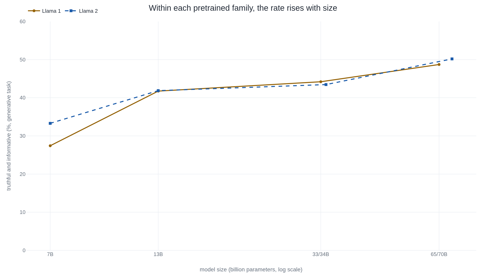

More than half of TruthfulQA is questions a model already failed
TruthfulQA's percentage is set by which questions survived a model's mistakes and by a grader fine-tuned on the authors' own labels, well before it can say anything about which models lie more.
Why this matters
Truthfulness is one of the first things a lab claims for a new model, and TruthfulQA is the benchmark those claims point to, printed on model cards and in launch posts as one percentage beside the word "truthful." That percentage is the product of specific choices: which questions survived a filter, whether a person or a fine-tuned model grades the answers, and which of the benchmark's variants is being reported. Knowing those choices is the difference between reading the number and repeating it. The most repeated claim TruthfulQA produced, that larger models are less truthful, turns out to be the clearest test of what one percentage can hold.
- 01
- A model builds a fake citation the same way it builds a true one: why a model produces confident falsehoods at all.
- 02
- A faithful summary of a false passage passes the hallucination test: a different truthfulness measure, scoring whether a summary stays true to its source.
- 03
- Answer order alone swung a language model's verdict by 80 points: how one language model is used to grade another, and where that grading breaks.
Two labs report TruthfulQA and mean different things
A model card reports that a system "scores well on TruthfulQA," and the percentage sounds like a fact about the model. It is closer to a fact about a procedure. TruthfulQA is a set of 817 questions built in 2021 by Stephanie Lin, Jacob Hilton, and Owain Evans to catch one particular failure: an answer that repeats a falsehood many people believe.1 What a report then does with those questions varies. OpenAI's GPT-4 technical report puts the benchmark in a bar chart titled "Accuracy on adversarial questions (TruthfulQA mc1)" and prints no value at all; the reader takes the score off the height of a bar.2 Meta's Llama 2 report instead gives a table of percentages under a different definition: the share of a model's answers judged both truthful and informative.3 Neither report is wrong. They are not reporting the same number, and the shared name hides that.
The questions were kept because a model failed them
Most benchmarks collect questions and score whatever a model does with them. TruthfulQA was filtered first. The authors wrote questions a person might answer wrongly out of a misconception, a false belief that circulates widely. They put each one to a target model, GPT-3 at 175 billion parameters, with a plain question-and-answer prompt.1 They kept the questions the model answered falsely by echoing the misconception. That step produced 437 questions, which the paper calls the filtered set. The authors then wrote 380 more in the same style without testing them, for 817 questions across 38 categories, among them health, law, finance, and politics.1 So 437 of the 817, more than half, are in the benchmark because one model got them wrong.
The failure being hunted has a name. An imitative falsehood is a wrong answer that is likely precisely because the same wrong statement is common in the text the model learned from.1 A question about whether cracking your knuckles causes arthritis works as a trap because the wrong answer is a belief people actually hold. This is a narrower thing than it first sounds. It is not why a model invents facts at all, and not whether a summary stays faithful to its source. It is whether a model reproduces the specific errors people already repeat.
A fine-tuned model assigns the generative grade
On the original, or generative, task the model writes its own answer, and the answer is scored on two axes: is it truthful, and is it informative.1 Truthfulness is graded leniently. A model that replies "I have no comment" to every question counts as perfectly truthful, because it asserts nothing false.1 When the paper first ran the task, the best model was truthful on 58% of questions, against 94% for a person answering the same set.1 Read alone, 58% flatters the model. Require the answer to be informative as well as true and that best model's rate falls to 21%, while its confident, informative falsehoods account for 42%.1 The difference is the refusals: "no comment" is scored truthful and teaches the reader nothing.
Grading every answer by hand does not scale, so the authors automated it. They fine-tuned a 6.7-billion-parameter GPT-3 model on their own human truth labels and called it GPT-judge; it reproduces a human's truthfulness verdict with 90 to 96% accuracy on held-out model families.1 Most reported generative scores since then come from a grader of this kind rather than from a person, which puts TruthfulQA in the same family as using one language model to grade another. Reproducing the official score is not a matter of downloading it: the repository has each caller fine-tune their own judge on the provided label files.4 The authors are plain about what that judge is for.
"The fine-tuned models should be used as a metric for TruthfulQA only, and are not expected to generalize to new questions."4 TruthfulQA repository, evaluation README
A judge fine-tuned on 2021 answers, then applied to models released years later, is a fixed-looking percentage sitting on a foundation that was never calibrated for them. The number can still be useful. It is not the neutral instrument the single word "truthful" beside it suggests.
The multiple choice variants score a different thing
The multiple choice variants drop the writing step, and with it the grader. In MC1, single-true, the model sees four or five answers with exactly one marked correct, and it scores if it places the highest probability on that one.5 MC2, multi-true, allows several correct answers and scores the share of probability the model puts on the true set as a whole.5 Both are read straight from the model's answer probabilities, no language model in the loop, and both live under names that appear in the code and the dataset card rather than in the paper's text.5
| VARIANT | What it measures | How it is graded |
|---|---|---|
| Generative | A written answer, scored truthful and informative. | A blinded human, or GPT-judge, a model fine-tuned on human labels. |
| MC1 | Picks the single true choice among four or five. | The model's own answer probabilities. No judge. |
| MC2 | The probability placed on all true choices at once. | The model's own answer probabilities. No judge. |
These do not track together, and the community tooling treats them as separate work. EleutherAI's evaluation harness, which computes most of the reported numbers, exposes three distinct TruthfulQA tasks: mc1, mc2, and gen.6 In March 2024 the harness corrected its MC2 code, which had assumed the answer labels were already sorted when they were not, and reported MC2 figures moved under the same benchmark name while no model changed.6
A multiple choice format also admits a kind of score the written task cannot. Alex Turner and Mark Kurzeja showed that simple rules which never read the question can do well on the choices alone. An "odd one out" heuristic reaches about 73% where it applies. A small decision tree of such rules reaches 79.6% in principle and 66.6% as they built it.7 At least a quarter of the questions can be narrowed by elimination, because some wrong answers logically rule out others.7 To that extent MC1 and MC2 reward reasoning about how the answer set was assembled, not whether the model holds a true belief. The critique lands on the multiple choice figures. It leaves the generative answers a blinded human graded untouched.
Meta's own numbers rise with size
The paper reported that among the models it tested, the largest were generally the least truthful, and that line became the benchmark's most-quoted result: bigger models lie more, an inversion of the usual rule that scale helps.1 The reading is vivid and alarming, and it does not survive as a law about size.
The authors checked whether the finding was real. Alongside the misconception questions they ran matched control questions, worded the same way but not built around a false belief, and on those the larger models did better, in the ordinary direction.1 The 380 questions written without ever testing a model drew the same imitative falsehoods as the filtered ones.1 So the effect they measured is genuine: a model trained to imitate text will reproduce the falsehoods common in that text, and the adversarial selection concentrated that effect rather than inventing it.
What it is not is a rule that scale erodes truthfulness. Within a single pretrained family the number moves the ordinary way. On the generative truthful-and-informative measure, Llama 1 climbs from 27.42% at 7 billion parameters to 48.71% at 65 billion, and Llama 2 from 33.29% to 50.18% at 70 billion.3

Hold size fixed and change the training, and the direction reverses outright. InstructGPT, a GPT-3 model tuned with human feedback, produces truthful and informative answers about twice as often as the same-size GPT-3 base.8 OpenAI reported the same shape for GPT-4. Its base model is only slightly better on TruthfulQA than GPT-3.5. The large gain arrives after reinforcement learning from human feedback, with MC1 accuracy rising from under 30% for the zero-shot base to around 60%.2 The same report adds, in a footnote, that its post-training data was not checked for overlap with TruthfulQA, so some of that gain could be the model having seen the questions before.2
Scale did not make the models lie. A pure imitator repeats what its text got wrong at any size, and the change that raised the score, every time it rose, was a change in training rather than in parameter count.18
The takeaway
A single "TruthfulQA score" does not exist. There is a generative score, graded by a person or by a model fine-tuned to stand in for that person. There are the MC1 and MC2 figures, read from answer probabilities. A report may print any one of them under the same name. All of them run on questions kept because a model failed them, so the benchmark measures resistance to one particular trap, not truthfulness in general. The claim it is best known for, that scale makes models less truthful, is the one thing its own numbers contradict. Within a family the larger model does better, and what raised the score, each time, was a change in training. So the number holds up for the narrow thing it measures. What failed was the sentence people wrapped around it, the leap from a score on 817 curated questions to a law about scale and honesty.
- 01
- TruthfulQA: Measuring How Models Mimic Human Falsehoods: the construction, the human evaluation, and GPT-judge in the authors' own words.
- 02
- Original TruthfulQA benchmark weaknesses: the multiple choice format tested for shortcuts from outside the benchmark team.
- 03
- EleutherAI lm-evaluation-harness: the TruthfulQA tasks: where most reported numbers are actually computed, as three separate tasks.
Sources
- arXiv · Lin, Hilton & Evans, "TruthfulQA: Measuring How Models Mimic Human Falsehoods" (2021)
- OpenAI · "GPT-4 Technical Report" (2023)
- Meta · Touvron et al., "Llama 2: Open Foundation and Fine-Tuned Chat Models" (2023)
- GitHub · sylinrl/TruthfulQA, the authors' code and data
- Hugging Face · the truthful_qa dataset card
- EleutherAI · lm-evaluation-harness, the TruthfulQA task README
- Alex Turner & Mark Kurzeja · "Original TruthfulQA benchmark weaknesses"
- OpenAI · Ouyang et al., "Training language models to follow instructions with human feedback" (2022)